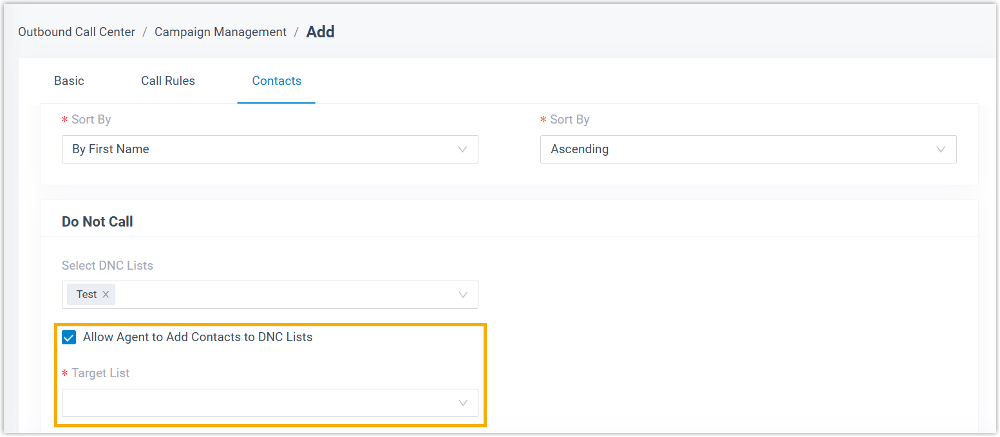
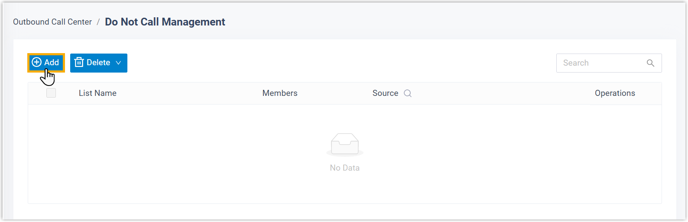
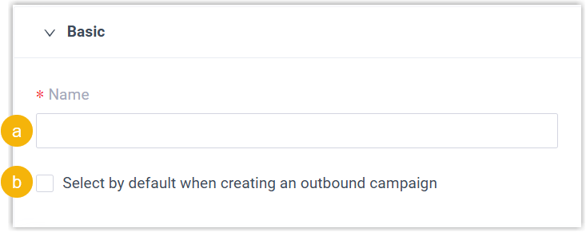
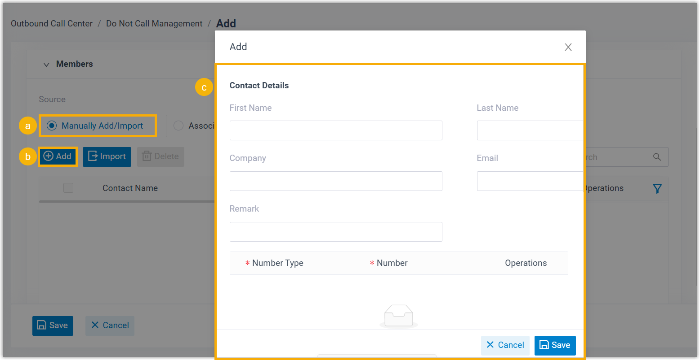
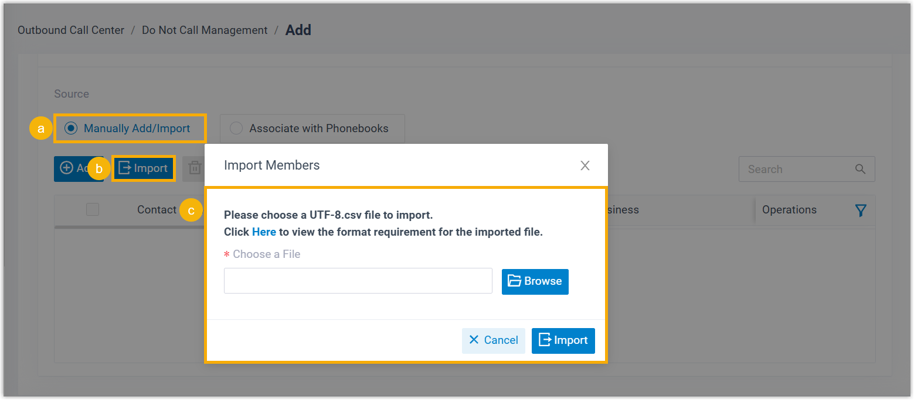
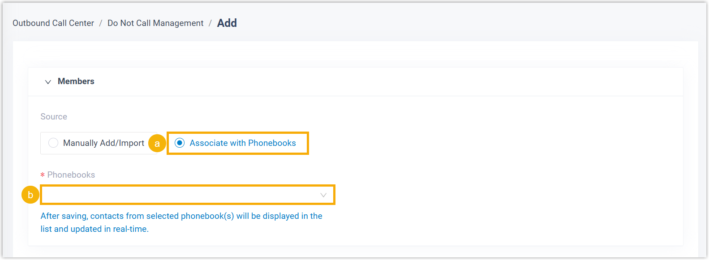
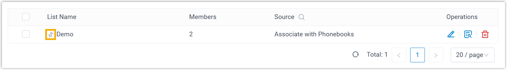
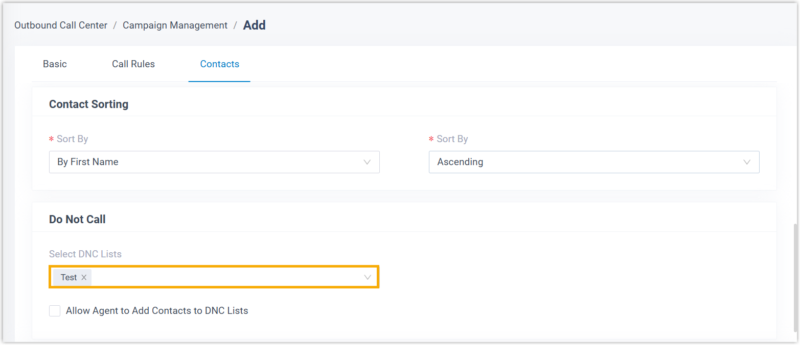

Add a DNC List
Do Not Call (DNC) List is a collection of phone numbers that should never be dialed. This topic describes how to add a DNC list to prevent specific numbers from being dialed in outbound campaigns.
Requirements and restrictions
- Requirements
- PBX's firmware version is 83.20.0.X or later.
- Restrictions
-
- Maximum number of DNC lists: 200 (max. extensions < 1000) or 500 (max. extensions ≥ 1000)
- Maximum number of DNC contacts: 100,000 (max. extensions
< 1000) or 200,000 (max. extensions ≥ 1000)Note: The contact limit covers DNC contacts that are manually added and imported. Contacts read from phonebooks are not included.
Introduction
Yeastar P-Series Software Edition enables you to create one or more DNC lists and add contacts whose numbers should be excluded from dial list of outbound campaign.
When a campaign is initiated, the system checks dial list against the DNC list based on the number matching rule configured in , and skips calls to any matched DNC numbers.
You can add contacts to a DNC list using the following methods:

| Method | Description |
|---|---|
| Manually add DNC contacts | Add DNC contacts one by one via manual entry. |
| Import DNC contacts (CSV file) | Upload a CSV file to import DNC contacts. Note: You can export a DNC list as a
template to start with.
For more information, see Export and Import a DNC List. |
| Read DNC contacts from phonebooks | Read DNC contacts from PBX-native or third-party phonebook(s). Note:
|
For more information about creating a DNC list, refer to the instructions below.
Procedure
- Log in to PBX web portal, go to .
- On the top of the list, click Add.

- In the Basic section, complete the basic
settings.

- In the Name field, enter a name to help you identify the DNC list.
- Optional: To select the DNC list by default when creating an outbound campaign, select the checkbox of Select by default when creating an outbound campaign.
- In the Members section, add DNC contacts.
Scenario Description Manually add DNC contacts 
- In the Source section, select Manually Add/Import.
- Click Add.
- In the pop-up window, fill in contact details, then click Save.
Import DNC contacts (CSV file) 
- In the Source section, select Manually Add/Import.
- Click Import.
- In the pop-up window, click Browse to select and upload a CSV file, then click Import.
Read DNC contacts from phonebooks 
- In the Source section, select Associate with Phonebooks.
- In the Phonebooks drop-down list, select phonebook(s).
- Click Save.
Result
The DNC list is successfully created and displayed on the list.

What to do next
Go to to configure DNC-related settings.
- Assign the DNC list to a new or an existing campaign.
Go to , then select the desired DNC lists from the drop-down list of Select DNC Lists.

When a campaign is initiated, the system checks dial list against the assigned DNC list(s) based on the number matching rule configured in , and skip calls to any matched DNC numbers.Note: How numbers are matched depending on the rule you configure:- Do Not Match or Exact Match: A number is regarded as DNC number only if it exactly matches an entry in the DNC list.
- Match the last {number} digits: A number is regarded as a DNC number if its last few digits matches an entry in the DNC list.
- Optional: Grant permission to allow agents to add contacts to DNC
list during campaign calls.
Select the checkbox of Allow Agent to Add Contacts to DNC Lists, then select the allowed DNC list(s).
Note: Agents can edit ONLY the DNC lists that are manually added and imported.